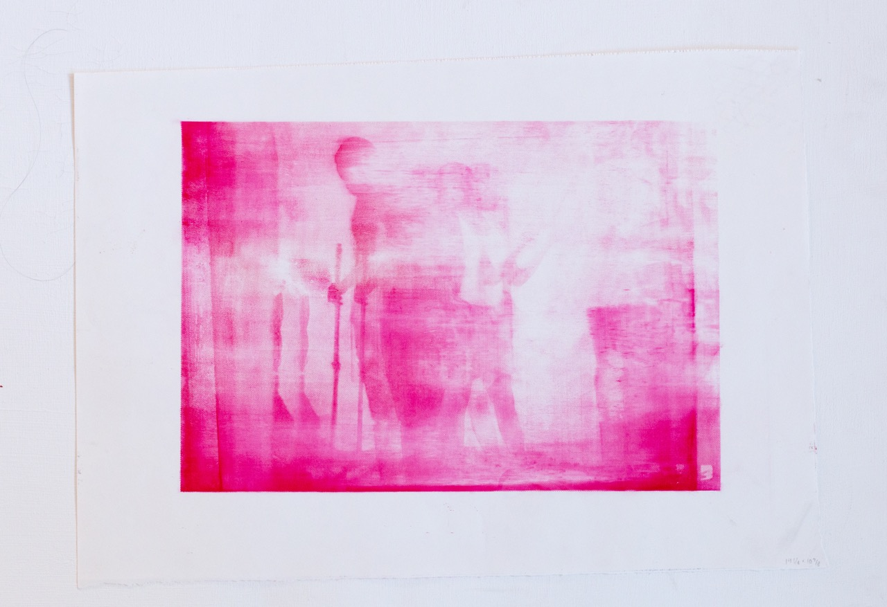
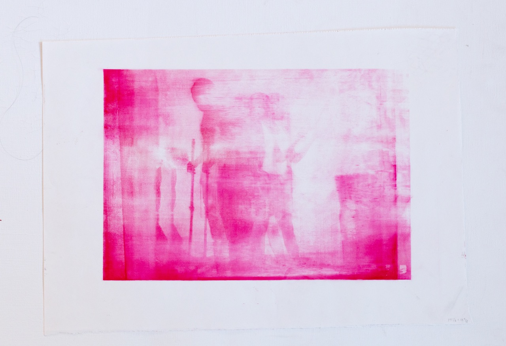
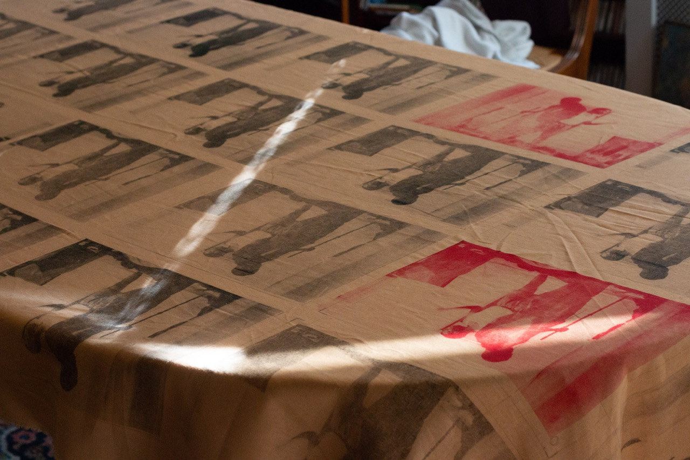
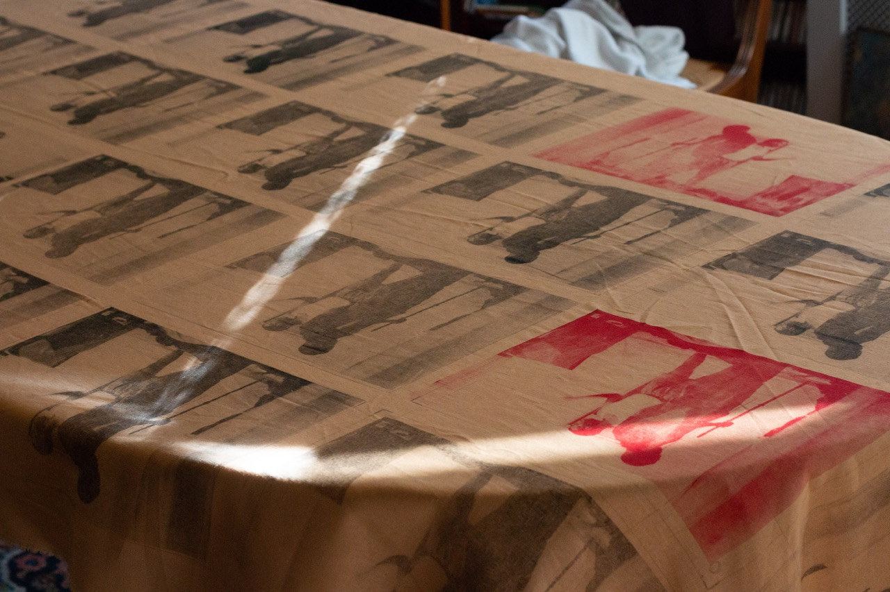

Toner || 2023
Toner - Silk Screened onto Paper.
 

New || 2023
Digital sketch

Crying || 2023
Digital sketch

Original photo silk-screened print natural linen woven fabric.
 

Gravestone Print || 2018
Etching and Aquatint.

Pills Monoprint || 2018
Inspired by a famous painting (I forget the name off the artist though).

Facial Scans || 2017

Form Study || 2015
Printed on a rolling press using four laser etched acrylic plates. Branding then silkscreened on. Printing continued till each plate was broken, each mistake is shown. Made for Child Clothing.

Inspired by my time in Sudan. Reversible shirt is inspired by traditional جلابية jilabīyah, which are reversible and have pockets on each side. Tracksuits made from Sudanese fabric, used to make traditional garments called على الله Alallah, a garment meant for mobility and comfort in Sudan as tracksuits are in the United States.